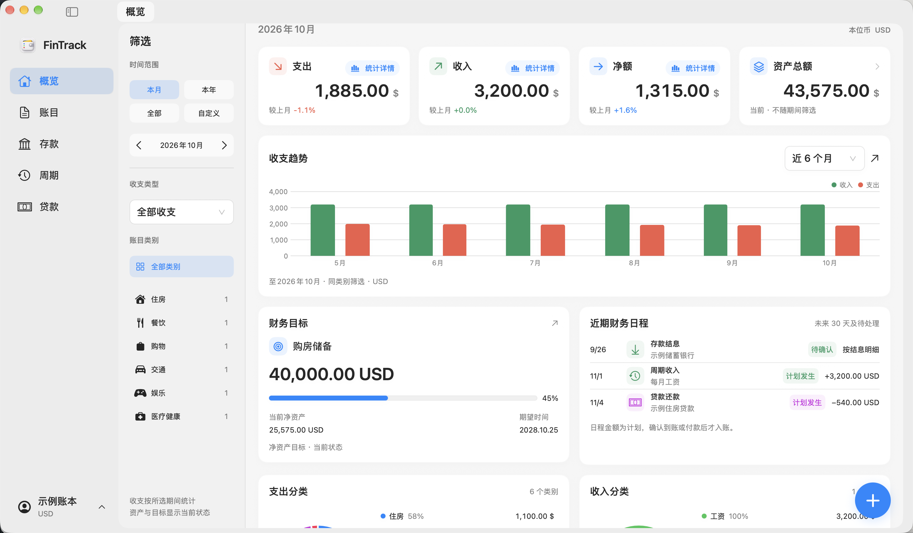
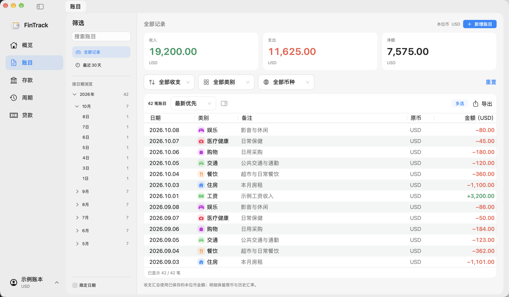

Every transaction has a place.
Record income and expenses, then browse by date, category, or currency. See where your money goes through summaries and reports.
From everyday spending to your assets and future plans.
Bring your finances together in a native workspace built for Mac.

Actual app screens, shown with separate sample data
Your complete financial workspace
Bring transactions, currencies, and financial plans into focus.
Record income and expenses, then browse by date, category, or currency. See where your money goes through summaries and reports.
Organize accounts and assets, manage deposits, loans, and recurring entries, and keep budgets and financial goals in view. Upload your own bank images; FinTrack remembers them by bank name and matches them automatically.
Look up and convert exchange rates, with separate data sources for accounting and the menu bar. Transactions retain their original currency and historical rate snapshots.
See it in action
An open workspace with intuitive navigation.
Move naturally between tracking, planning, and reviewing.

Organize entries by date, category, and currency, with both original and base-currency amounts visible.
FinTrack v1.4.1 · Sample ledgerYour data, under your control
FinTrack stores your financial ledger locally. Use native backups and CSV files to save, move, and review data when needed.
Learn about data & privacyYour ledger is stored separately from the app, so updating the application does not mean starting over.
Create native backups and keep a safety copy before restoring. Use CSV for data exchange and full backups to preserve your ledger.
API keys for custom exchange-rate sources stay in your Keychain and are not transferred with ledger backups. Rate lookups contact the external providers you select.
FinTrack for Mac
Start with a few entries. Check that saving, reopening, and backups work for you,
then make FinTrack part of your routine.
The current build uses a fixed local signing identity and is not Apple-notarized. After downloading, you may need to allow it in macOS Privacy & Security.Installation guide ↗
8466c9878e6ecf5cfc070f9ab7f4bdb45207b2a19408589d4af36a9a9f0b7826Download checksums ↗Versions & updates
Swipe or scroll to explore past releases.
Added launch at login, background operation, system notifications, and a shortcut to convert selected amounts. Scheduled entries run at 09:00 local time; improved resizable transaction columns, chart category selection, font-size shortcuts, and settings layout.
Reading selected text and sending notifications require system permissions. Automatic popups for selections are off by default. Updates separate the download choice from installation confirmation; create a full backup before upgrading.
Added live thousands separators when entering amounts; fixed backspace behavior and overwriting backups with the same name. Improved loan cent handling, historical amount precision, CSV validation, transaction columns, select-all behavior, details layout, and exchange-rate history loading.
The release uses a fixed local signing identity. The first upgrade from an older build may prompt for Keychain permission. Create a full backup before upgrading.
Unified finance forms, icons, colors, dates, and reminder times. Improved single- and two-column lists, multi-select transactions, and deletion by category. Added macOS font selection and adopted the MIT license.
Improved consistency for interest payments and automatic posting at maturity. Estimated income is flagged for review until actual receipt is confirmed. Create a full backup before upgrading.
Update packages download directly to temporary files with progress and integrity checks; timeouts, disconnections, and checksum failures receive separate messages.
If an older version cannot download an update, download and verify it manually, then replace the app once. v1.2.1 uses the new download process. Create a full backup first.
Improved category, overview, and budget summaries. Transaction filters follow income and expense categories; refined details in narrow windows, date picking, and import/export feedback. New installs start with an empty ledger.
Existing ledgers remain in their original location. Create a full backup before upgrading. v1.1 users can check for and download this version from the built-in signed update source.
CSV categories are imported into category management, and previously imported categories can be completed and edited. Fresh installs begin with an empty ledger and categories. Signed in-app updates were introduced in this version.
Upgrading from v1.0 requires a one-time manual download and replacement. The ledger is stored outside the app; create a full backup before updating.
Established the first release baseline for transactions, assets and financial plans, multiple currencies, and local backup and recovery.
Tested on an Apple Silicon Mac. Intel hardware, full VoiceOver support, and long-term use with real financial data remain unverified. Online updates require a trusted signing source; manual updates are available through Releases.